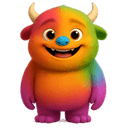
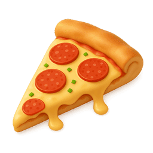
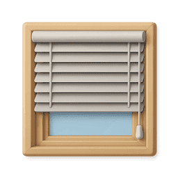

Ajuda o Monstrinho!
A Missão do Monstrinho!
O simpático monstrinho percebeu que as coisas do dia a dia têm formas geométricas escondidas. Ele precisa de ajuda para identificar estas formas nos objetos. Queres ajudar?

Fantástico!
Chegaste ao fim do caminho mágico!
És um verdadeiro explorador das formas!
És um verdadeiro explorador das formas!